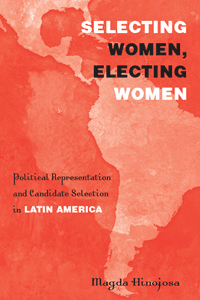

Offers an analytic framework to show how the process of candidate selection often limits the participation of women in various Latin American countries
Offers an analytic framework to show how the process of candidate selection often limits the participation of women in various Latin American countries


 Offers an analytic framework to show how the process of candidate selection often limits the participation of women in various Latin American countries
Offers an analytic framework to show how the process of candidate selection often limits the participation of women in various Latin American countries

|  |
Selecting Women, Electing WomenPolitical Representation and Candidate Selection in Latin AmericaMagda Hinojosapaper EAN: 978-1-43990-848-8 (ISBN: 1-4399-0848-6) |
"Selecting Women, Electing Women is an outstanding book that explores the crucial, yet very understudied relationship between political party candidate-selection processes and the election of women in general elections in Latin America. Hinojosa does a fantastic job of combining cross-country comparative analysis with rich and detailed case studies from Chile and Mexico. She makes a convincing argument regarding the powerful (and varying) impact of different types of nomination procedures on the presence of women in public office. Through the expert linkage of the gender and politics, electoral systems, and political parties literatures to its design, analysis, and conclusions, the book makes a profound contribution to scholarly understanding of multiple critical aspects of Latin American politics and society."
—Mark P. Jones, Joseph D. Jamail Chair in Latin American Studies and Chair of the Department of Political Science at Rice University
Selecting Women, Electing Women is a groundbreaking book that examines how the rules for candidate selection affect women's political representation in Latin America. Focusing particularly on Chile and Mexico, Magda Hinojosa presents counterintuitive findings about the factors that keep women out of politics. She argues that primaries—which are regularly thought of as the most "democratic" process for choosing candidates—actually produce fewer female nominees than centralized and seemingly exclusionary candidate-selection procedures.
Hinojosa astutely points out the role of candidate selection processes in explaining variation in women's representation that exists both across and within political parties. Selecting Women, Electing Women makes critical inroads to the study of gender and politics, candidate selection, and Latin American politics.
Excerpt available at www.temple.edu/tempress
�[A] discerning exploration of women in Latin American politics.... [Hinojosa] handily disproves the leading explanations for female under-representation, refuting both supply-side arguments and demand-side excuses with a parade of data on women's progress.... Selecting Women, Electing Women [provides] detailed case studies on Chile and Mexico, drawing the surprising conclusion that it may in fact be the primary process�often thought of as the most democratic of all nominating systems�that keeps Latin American women disempowered."
—NACLA Report on the Americas
"Selecting Women, Electing Women argues that the rules for candidate selection affect the election of women to political office in Latin America. Hinojosa�s overall approach and the substantive argument she makes represent significant innovations.... In addition to providing a persuasive explanation of the puzzle of variation in women�s representation in the region, the book provides ample background on the status of women overall, a clear description of the political terrain in two important countries in the region, and a sense of how the same issues play out in other countries, including Argentina, Bolivia, Cuba, Guatemala, and Peru. Her interview data provides the kind of detail that illuminates important differences within and across countries and makes the book easily accessible to readers unfamiliar with political parties in Latin America."
—Journal of Politics
"Hinojosa has analyzed the results of her magnificent, tightly organized research project that examined institutional and gatekeeper barriers to women who run for municipal (mayoral) offices in Latin America, with a focus on Mexico and Chile.... The genius of Hinojosa's research design is attention to the candidate selection process. Counterintuitively, she finds that selection procedures that are more exclusive (not inclusive) and centralized (not decentralized) benefit women.... Summing Up: Highly recommended."
—Choice
"In Selecting Women, Electing Women, Hinojosa argues that the crucial step in the legislative recruitment process is the stage at which parties determine the candidates that they will nominate for office.... The author�s case is clearly argued, and the interviews provide rich evidence for the suggestions made.... The story she tells is compelling and convincing enough that it is clear the nomination processes are a crucial area that needs to be considered more thoroughly when evaluating women�s access to political positions in Latin America."
—Perspectives on Politics
Acknowledgments
1. Electing Women: Female Political Representation in Latin America
2. Why Selection Matters: Explaining Women�s Representation in Politics
3. How Selection Matters: A Theoretical Framework
4. The Paradox of Primaries: Inclusive-Decentralized Selection
5. Inclusive-Centralized and Exclusive-Decentralized Selection
6. �Less Democratic, but More Effective�: Exclusive-Centralized Selection
7. Selecting Candidates Closer to Home: Widows, Wives, and Daughters
8. Altering Candidate Selection: The Adoption and Implementation of Gender Quotas
9. Candidate Selection and Women�s Representation in Latin American Politics
Appendix A: Latin American Women�s Representation by Party
Appendix B: Interviews
Notes
References
Index
Magda Hinojosa is Assistant Professor in the School of Politics and Global Studies at Arizona State University. She has received awards from the Fulbright and Ford Foundations.
Political Science and Public Policy
Women's Studies
Latin American/Caribbean Studies
© 2015 Temple University. All Rights Reserved. This page: http://www.temple.edu/tempress/titles/2198_reg.html.